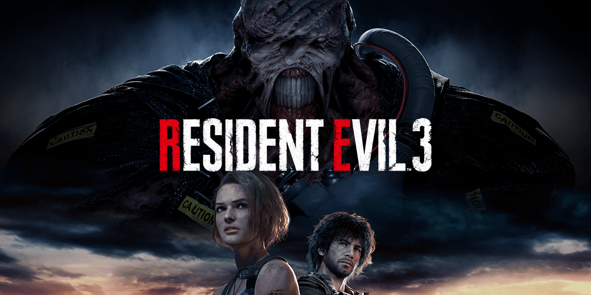

Total de pessoas que favoritaram os jogos

Total de pessoas que favoritaram os personagens

Leon: Azul escuro
Claire: Vermelho
Jill: Azul
Ada: Roxo
Luis: Branco
Ashley: Verde
Carlos: Amarelo
Sherry: Rosa